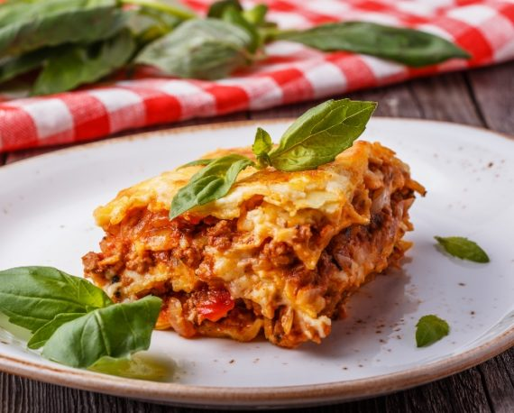

Meat Lasagna

This isn't a quick and easy lasagna. This is a slow and divine lasagna.
A memorable lasagna. And we have a Simply Recipes reader to thank for it.
Several months ago a commenter on this site, by the name of "El Cocinero Loco"
(The Crazy Cook) left a detailed and delightful lasagna Bolognese recipe in the comments of one of our recipes.
The recipe given was a little incomplete; I had to fill in the blanks by referring to a few cookbooks.
But it sounded so good that we just had to try it.
Yes it takes hours, and yes, it is worth it. Mr. Loco's commentary is quite amusing,
so I do encourage you to read it (just scroll down the comments below).
Ingredients
Salsa Boloñesa
- 4 cdas aceite de oliva
- 1 cebolla picada en cubos
- 2 zanahorias picadas en cubos
- 2 varas apio picado en cubos
- 1 cda Ajo Picado en Aceite de Oliva Gourmet
- 650grs carne picada o molida
- 1 cdta Perejil Deshidratado Gourmet
- 1 cdta Albahaca Deshidratada Gourmet
- 1 cda Orégano Entero Gourmet
- 1 taza vino tinto
- 1 lt salsa de tomates triturados
- 1 hoja de Laurel Seleccionado Gourmet
- 1 sobre Caldo en Polvo de Carne Gourmet
- 1/2 litro agua
Salsa Bechamel
- 40grs mantequilla
- 40grs harina
- 1/2 litro leche
- 1 pizca de Nuez Moscada Molida Gourmet
- Sal Rosada del Himalaya Gourmet a gusto
- Mix de Pimientas Gourmet a gusto
Lasaña
- 8-12 láminas de masa de lasaña precocida
- 1 1/2 taza de queso mantecoso granulado
- 5 cdas queso parmesano
Preparation
La salsa boloñesa
- Calentar aceite de oliva en una olla y añadir cebolla, zanahoria y apio picado en cubos.
- Agregar Ajo Picado Gourmet, mezclar suavemente y sofreír por 10 minutos.
- Incorporar al sofrito la carne picada o molida y cocinar a fuego alto hasta que la carne esté ligeramente dorada.
- Añadir Perejil Deshidratado, Albahaca Deshidratada y Orégano Entero Gourmet.
- Agregar vino tinto y salsa de tomates triturados.
- Agregar 1/2 litro de agua.
- Mezclar y cocinar por 3 minutos.
- Añadir Laurel Seleccionado y 1 sobre de Caldo en Polvo de Carne Gourmet. Mezclar hasta disolver completamente.
- Condimentar con Sal Rosada del Himalaya y Mix Pimientas Gourmet a gusto.
- Dejar cocinar por 30 a 40 min, revolviendo constantemente para evitar que se pegue en la base.
La salsa bechamel
- Derretir mantequilla a fuego bajo en una olla.
- Agregar harina y cocinar por 1 minuto, revolviendo constantemente.
- Añadir leche fría y revolver rápidamente con un batidor de varilla para evitar que se formen grumos.
- Sazonar con Nuez Moscada Molida y Sal Rosada del Himalaya y Mix de Pimientas Gourmet a gusto.
- Mezclar suavemente y cocinar por unos 5 minutos o hasta que la salsa haya espesado.
Armado de la lasaña
- Pincelar con aceite todo el interior de una fuente rectangular apta para horno.
- Verter en la base un poco de salsa boloñesa y cubrir con una capa de masas precocidas.
- Añadir una buena cantidad de salsa boloñesa y algunas cucharadas de bechamel.
- Espolvorear queso mantecoso a gusto y cubrir con más masas precocidas.
- Repetir este procedimiento hasta obtener 4 capas de salsas, queso y masa.
- Finalizar la lasaña con ambas salsas y abundante queso mantecoso y parmesano.
- Hornear por 35 min o hasta que la masa esté cocida y el queso bien gratinado.
- Cortar en porciones cuadradas y servir.